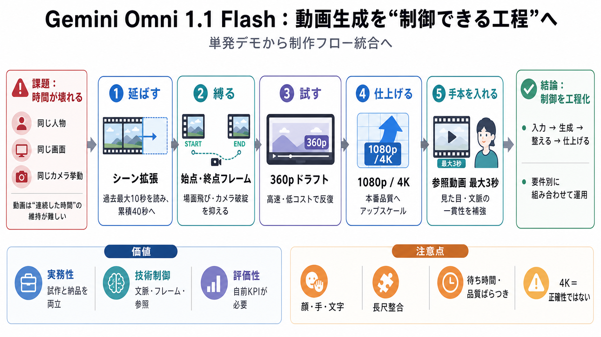

Gemini Omni Flash: API, Pricing & Video Editing
Google lists Gemini Omni Flash at about $0.10 per second of video output. The Gemini API pricing page lists $1.50 per 1M…

Google lists Gemini Omni Flash at about $0.10 per second of video output. The Gemini API pricing page lists $1.50 per 1M…
Developer access arrived on June 30, 2026, when Google brought Omni Flash to the Gemini API and AI Studio in public prev…
Clips run 3 to 10 seconds at 720p native, in landscape (16:9) or portrait (9:16). As reference inputs the model accepts …
Video Output\ \ Gemini Omni Flash charges 2,040 tokens per image, 32 tokens per audio second, and 5792 tokens per video…
The Gemini Omni API brings Google DeepMind's multimodal video generation and editing model, introduced at Google I/O 202…